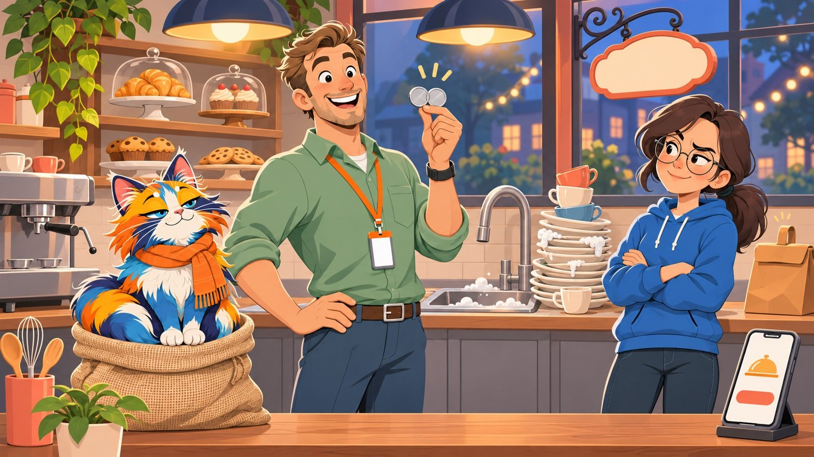
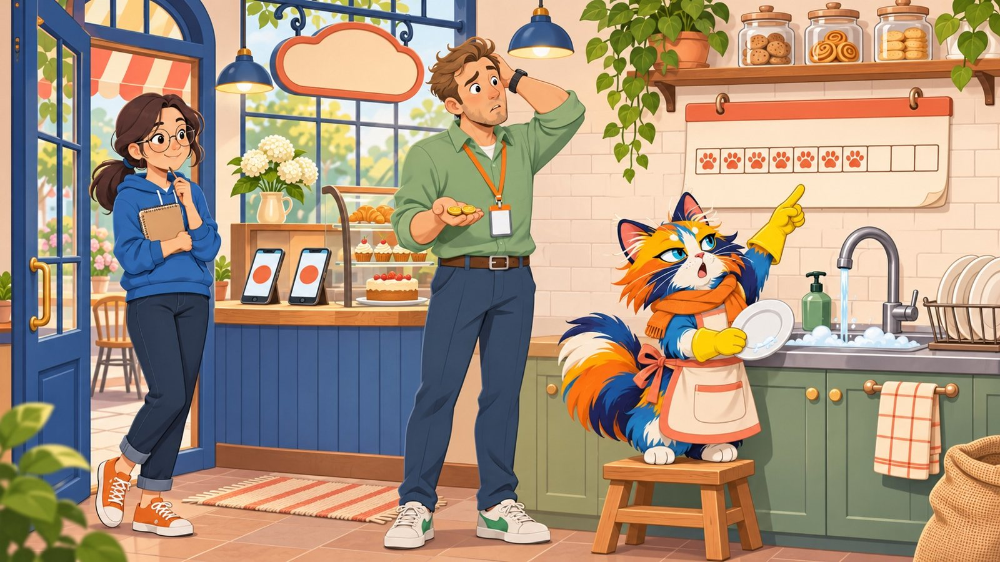

Котейка «выигрывает» вдвое чаще Алисы и Боба: его «разные» — это сразу два исхода из четырёх, а у них — по одному.
Шаг 1 из 9
Исходы и события
После шага ты сможешь перечислить все равновозможные исходы и посчитать вероятность как долю нужных.

Кафе Алисы, Боба и Котейки только открылось, и после первого вечера в раковине гора посуды. Боб предлагает решать жребием из двух монеток. Честное ли у него правило — и кто на самом деле будет мыть чаще?
АлисаАналитик. На любое «очевидно» отвечает: «А сколько это в штуках?»
БобПродакт. Быстро делает выводы — иногда слишком быстро.
КотейкаКот в мешке. Отвечает за случайность: бросает монетки и кубики.
Три исхода — по трети вечеров?

Боб, продакт
Бросаем две монетки. Два орла — моет Алиса, две решки — я, разные — Котейка. Исходов три, каждому по трети вечеров. Честно!

Котейка
Мур. Я согласен. Очень согласен.

Алиса, аналитик
Что-то Котейка слишком доволен. Давай сначала прикинем, а потом бросим монетки сто раз.
Как думаешь, в скольких вечерах из 100 посуду будет мыть Котейка? Боб уверен, что около 33.
Напиши число — на следующей карточке бросим монетки и проверим.
Две монетки моют посуду
Один бросок пары — один вечер. Сначала бросай по одному, потом сразу сотней. Потом нажми «Подпиши монетки» и посмотри на плитки ещё раз.
??Брось пару монеток
ООмоет Алиса0
О и РОРмоет Котейка0
РОмоет Котейка0
РРмоет Боб0
Столбик — доля вечеров · серая точка — сколько должно быть по теории · красный пунктир — «по трети», как обещал Боб
Одинаковые на вид монетки — всё равно две разные

Пока монетки одинаковые, кажется, что «орёл и решка» — один исход. Покрась одну монетку в синий, другую в оранжевый. «Разные» сразу распадаются на два случая: синяя — орёл, оранжевая — решка, и наоборот.
Монеткам всё равно, покрасил ты их или нет: они и без краски две разные. Поэтому исходов четыре — ОО, ОР, РО, РР, — и все четыре одинаково вероятны. Котейке достаются два из четырёх, то есть половина вечеров.
На этом спотыкались и знаменитые учёные. В XVIII веке Жан Д'Аламбер написал в Энциклопедии, что за два броска хотя бы один орёл выпадает с шансом 2 из 3: исходов, по его счёту, три — «орёл сразу», «решка, потом орёл», «две решки». Но «орёл сразу» — это два исхода, ОО и ОР. Верный ответ — 3 из 4.
Для зануд: есть уголок физики, где природа и правда не различает частицы (бозоны, статистика Бозе — Эйнштейна), и там три исхода вместо четырёх. Монетки, кубики и гости кафе к нему не относятся.
Идея из лекций: Джозеф Блицштейн, курс Stat 110
Опыт, исход, событие
Опыт — то, что можно повторять: бросок пары монеток, бросок кубика, гость открыл приложение кафе.
Исход — один из вариантов, чем опыт может закончиться: ОР, «выпала четвёрка», «гость заказал».
Событие — утверждение про исход, которое либо верно, либо нет: «монетки разные», «выпало чётное». Событие — это набор исходов: «разные» = {ОР, РО}.
Вероятность события — число от 0 до 1: какая доля опытов закончится этим событием, если повторять очень много раз. Пишут P(разные) = 0,5.
Две монеткиКубикГость в приложении
Все исходыОО, ОР, РО, РР1, 2, 3, 4, 5, 6заказал, ушёл
Событие«разные»«чётное»«заказал»
Вероятность2 из 4 = ½3 из 6 = ½около 10 %
У гостя два исхода, но они не равновозможны: заказывает примерно каждый десятый. Поэтому его вероятность не посчитать делением «1 из 2» — её узнают по частоте, на длинной серии гостей. Об этом шаг 2.
Число орлов в паре (0, 1 или 2) — уже не исход, а число, которое выдаёт опыт. Такие числа называют случайными величинами — подробно в шаге 7.
Благоприятные делить на все
История
В штуках
Из 1000 вечеров примерно в 250 выпадет ОО, в 250 — ОР, в 250 — РО и в 250 — РР. Котейке достаются ОР и РО — около 500 вечеров (50 %), Алисе и Бобу — по 250 (25 %).
Формула
P(A) = (число благоприятных исходов) / (число всех исходов)
P(Котейка) = 2 / 4 = 0,5
Словами: доля нужных плиток среди всех — если все плитки одинаково вероятны. Без этого «если» формула врёт: у гостя «заказал» и «ушёл» — не 1 из 2.
Отсюда два края шкалы. Невозможное событие — 0 исходов из 4 (три орла на двух монетках), его вероятность 0. Достоверное — 4 из 4 (хоть какая-то сторона выпала), его вероятность 1. Всё остальное лежит между ними.
Два кубика: 36 клеток
Котейка бросает синий и оранжевый кубики. Каждая пара — клетка таблицы, все 36 клеток равновозможны. Выбери сумму — и увидишь, сколько клеток её дают.
Даже Лейбниц ошибался: считал, что суммы 11 и 12 выпадают одинаково часто, ведь каждая получается «одним способом» — 5 и 6 или 6 и 6. Подпиши кубики — и у 11 окажется две клетки (синий 5 и оранжевый 6, синий 6 и оранжевый 5), а у 12 — одна.
Идея из книги: Джозеф Блицштейн, Джессика Хван, «Introduction to Probability»
Три лица вероятности
Слово «вероятность» в жизни означает три разные вещи. Нажми на плитку — откроется пример из кафе.
В курсе мы чаще всего считаем по устройству, а проверяем частотой: посчитали «2 из 4» — бросили сто раз — сошлось.
Идея из книги: Герд Гигеренцер, «Risk Savvy»
Перебери клетки сам
Допиши функцию: вероятность, что сумма двух кубиков равна s. Перебери все 36 пар двумя циклами и посчитай, сколько из них дают нужную сумму. Нажми «Проверить» — проверка прогонит функцию на всех суммах.
Котейка придумал новое правило
Котейка
Ладно, бросаем три монетки. Все одинаковые — моет Боб, иначе — я. Событий два, «одинаковые» и «разные», значит, пятьдесят на пятьдесят. Честнее не бывает!
Что не так в рассуждении Котейки?
Подпиши монетки: исходов 2 · 2 · 2 = 8. «Все одинаковые» — только ООО и РРР, 2 из 8 = ¼. Боб моет в 250 вечерах из 1000, Котейка — в 750.
Три задачи и как на них отвечать
Схема ответа одна на весь курс: переформулируй → посчитай в штуках → запиши формулу → проверь симуляцией → скажи вывод одной фразой.
Бросают два кубика. Какова вероятность, что сумма равна 7?
Переформулирую: какая доля клеток таблицы 6 × 6 даёт сумму 7, если все клетки равновозможны.
В штуках: пар (синий, оранжевый) 36, сумма 7 у шести: 1 + 6, 2 + 5, 3 + 4, 4 + 3, 5 + 2, 6 + 1. Из 3600 бросков — около 600.
Формула: P(сумма 7) = 6 / 36 = 1/6 ≈ 16,7 %.
Проверка: функция p_sum(7) из карточки с кодом.
Вывод: примерно каждый шестой бросок; семёрка — самая частая сумма.
Бросают три монетки. Какова вероятность, что орлов хотя бы два?
Переформулирую: сколько из всех исходов трёх монеток содержат два или три орла.
В штуках: исходов 2 · 2 · 2 = 8. Подходят ООО, ООР, ОРО, РОО — четыре. Из 1000 бросков троек — около 500.
Формула: P = 4 / 8 = 1/2.
Быстрый способ: «орлов хотя бы два» и «решек хотя бы две» — зеркальные события, и ровно одно из них случается в каждом броске. Значит, у каждого ½.
Вывод: ровно половина; монетки честные, и задача симметрична.
Сумма 2 и сумма 7 — обе «одна сумма» из одиннадцати возможных. Почему у них разные шансы?
Переформулирую: равновозможны ли суммы? Нет — равновозможны клетки, а суммы собираются из разного числа клеток.
В штуках: сумму 2 даёт одна клетка (1 и 1), сумму 7 — шесть. Из 3600 бросков двойка выпадет около 100 раз, семёрка — около 600.
Формула: 1/36 ≈ 2,8 % против 6/36 ≈ 16,7 %.
Вывод: считать надо подписанные пары, а не суммы. Так ошибался даже Лейбниц: он считал 11 и 12 равновероятными, а у 11 две клетки, у 12 одна.
Четыре вопроса про исходы
Вероятность орла у честной монетки — ½. Что это значит?
Вероятность ½ описывает длинную серию: из 1000 бросков орлов будет около 500. Про один бросок или короткую серию она ничего не обещает.
Котейка уверяет, что шестёрку на кубике выбросить труднее, чем единицу. Прав ли он?
Шесть одинаковых граней — шесть равновозможных исходов. Из 600 бросков каждая грань выпадет около 100 раз.
Боб пишет в отчёте: «Вероятность, что гость вернётся, — 1,3: он очень доволен». Что не так?
Вероятность — доля: нужные исходы делить на все. Нужных не может быть больше, чем всех, поэтому вероятность лежит от 0 до 1.
Что вероятнее на двух кубиках: сумма 2 или сумма 7?
Сумму 7 дают шесть клеток из 36 (16,7 %), сумму 2 — одна (2,8 %). Семёрка выпадает в шесть раз чаще.
Подпиши монетки
- Сначала перечисли все исходы опыта и проверь, что они равновозможны. Одинаковые на вид монетки и кубики всё равно разные — подпиши их.
- Событие — набор исходов. «Разные» на двух монетках = {ОР, РО}.
- P(A) = благоприятные / все, если все исходы равновозможны.
- Вероятность — от 0 до 1: 0 — невозможно, 1 — обязательно.
- Две монетки: 4 исхода, «разные» — ½, «два орла» — ¼. Два кубика: 36 клеток, сумма 7 — 6/36, сумма 2 — 1/36.
- Вероятность ½ не значит «через раз». Это доля на длинной серии.
- Опыт
- то, что можно повторить: бросок, визит гостя; на собеседовании — experiment, trial
- Исход
- чем закончился опыт: ОР, «выпала четвёрка»; outcome
- Пространство исходов
- все исходы опыта списком; sample space
- Событие
- набор исходов: «разные», «чётное»; event
- Вероятность, P(A)
- доля опытов, где случилось A, на длинной серии; probability
- Равновозможные исходы
- исходы с одинаковыми шансами; equally likely outcomes
